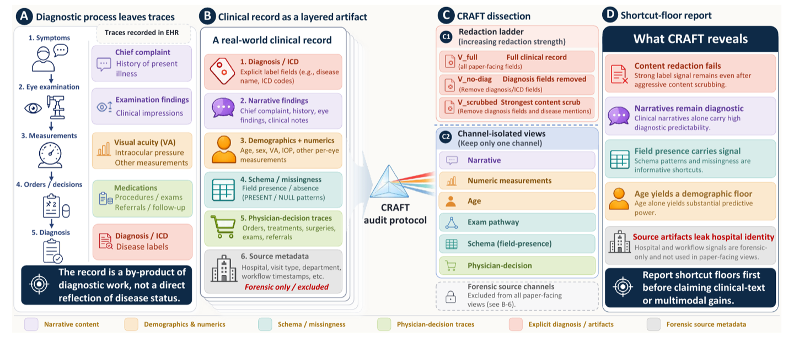

The Diagnosis Is Already in the Notes
Most medical multimodal benchmarks are assembled with a reasonable-looking recipe. Take a diagnostic image — a fundus photograph, an OCT scan — pair it with the clinical record from the same visit, delete the field that states the diagnosis, and treat what remains as auxiliary context for the image. A model that does better with the text than without it is then credited with cross-modal reasoning: it combined what it saw with what it read.
Our EMNLP 2026 paper, The Diagnosis Is Already in the Notes, makes a simple point about that recipe: the “auxiliary” text is not neutral. On 5,904 ophthalmic visits spanning eight disease cohorts, a frozen text encoder with a single linear layer on top recovers the disease label from the diagnosis-redacted record at 0.944 macro-AUROC. The unredacted record gives 0.998. The most aggressive dictionary scrub we tried — removing every disease mention we could enumerate — closes less than one further percentage point.
Why the signal survives redaction
A clinical record is not a pre-diagnostic observation sheet. It is written during the diagnostic process, by a clinician who already has a hypothesis, and every part of it carries fingerprints of that hypothesis. We split the record into channels and measured each one on its own:
- Narrative text (chief complaint, history, findings) alone reaches 0.978. Clinicians describe what they are looking for.
- Physician decisions — which exams were ordered, which treatments were prescribed — predict the disease independently of any description.
- Field presence is the surprising one. Take a view that erases every value and exposes only which fields were populated. It still reaches 0.854. A patient suspected of retinal vein occlusion gets a fluorescein angiography order; a dry-eye patient does not. The schema of the record is itself a diagnostic trace.
Word-level scrubbing cannot touch the last two channels, which is why “we removed the diagnosis field” is not the same as “the text is diagnostically neutral”.
CRAFT: measure the floor before you claim the gain
We packaged the analysis as CRAFT — Channel-wise Redaction And Floor Test. It takes a dataset and a label, renders each record into a ladder of increasingly aggressive redaction levels and into channel-isolated views, and reports how recoverable the label is from each view using a deliberately weak probe (a frozen encoder plus a linear head, three seeds). Using a weak probe is the point: if that can recover the label, the information is explicit, not something a clever model had to infer. The channel rankings reproduce when the encoder is swapped for Qwen3.5-9B.

The output is a set of shortcut floors: how well a text-only model does on each view before any image is involved. Our recommendation is procedural rather than clever — report those floors alongside any clinical-text or image–text fusion result. A fusion model that beats the image-only baseline by five points has not demonstrated cross-modal reasoning if the text branch alone sits at 0.94.
What this does and does not say
The absolute numbers belong to one health system, one electronic-record system and one family of documentation templates; what transfers is the protocol and the failure mode it exposes. The labels are retrospective cohort assignments, not independently adjudicated diagnoses, so we talk about label recoverability, not diagnostic correctness. And the paper is an auditing instrument for the text branch, not evidence about image–text fusion itself — it tells you what a fusion gain must be measured against.
We are turning CRAFT into a leakage-audit module for the data-governance platform in our lab, so that a dataset gets audited before it is released rather than after someone has trained on it. The code, redaction-level specifications, de-identified example records and per-seed results are on GitHub.